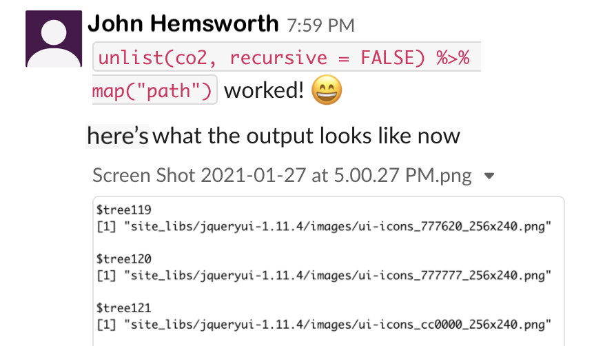

Chapter 5 Informatics lab management tools
There are a few tools that can be especially useful for assisting with day-to-day management of projects involving informatics regardless of if you are simply collaborating with an informatics expert or you are leading an informatics research team.
5.1 Slack
 [source]
[source]
Slack is a communication tool that allows you to communicate with lab members much more efficiently than email. It is a bit like a combination of an instant message system and email and dropbox.
You can do quite well with the free version of slack. It may be all that your research group needs indefinitely. The major difference between the free version and the paid versions is that the free version does not save all of your message history.
Currently, with the free version you can search through the history of the last 10,000 messages. From our experience using this with a department of about 250 people, it takes about a year to reach this. If there are any really important messages or files, make sure to save them just in case.
5.2 How to use slack?
5.2.1 Workspaces
The main landing page for slack is called a workspace, which looks like this:
 In the above image, this person has 5 workspaces which are indicated by the squares on the far left. Each workspace allows for multiple channels for communicating. These channels can include all members of the workspace or specific subsets of members. Team members can also have separate direct messages to have one-on-one discussions.
In the above image, this person has 5 workspaces which are indicated by the squares on the far left. Each workspace allows for multiple channels for communicating. These channels can include all members of the workspace or specific subsets of members. Team members can also have separate direct messages to have one-on-one discussions.
It’s a good idea to check if your department or institute is already using slack. If so, they may have a workspace that you can join. Otherwise you may want to think about recruiting your department or institute to start using slack. In this case you could start a workspace where people outside your research group can communicate. This would still allow you to have group messages with your lab or specific groups within the lab. Otherwise, you can start a workspace just for your research group.
5.2.2 Channels
Channels are the main way in which you can converse with your team on slack.
We recommend making a slack channel for your entire research group. Everyone in your group will be able to discuss something by sending messages in real time. If someone is not available at that time, they will see the message when they next check slack. We also recommend making project specific channels. For these channels you can add all of the team members working on a specific project, so that they can easily discuss and review discussions about the project.
Importantly, you can make channels private or public. If a channel is public, anyone in the workspace can join.

channels
5.3 Features
5.3.1 Pins
If someone sends a really important message, like a link to a relevant document, you can “pin” the message so that it is easier to find later.
Hovering over a message you will get the following options:
 Clicking on the 3 dot button allows you to do several useful things for a message including pinning it to find it easily later.
Clicking on the 3 dot button allows you to do several useful things for a message including pinning it to find it easily later.

Pin it for later!
5.3.2 Code
One great feature about slack, is that it is very convenient to message about code.
 You can also attach files directly to messages just like in the above message which has a screen shot image file.
5.3.3 Reminders
If you want to be reminded about a message in 20 minutes or next week you can also do that using the same hovering and 3 dot button option.

You may also notice in the image above that your messages can be edited! unlike an email.
5.3.4 Polls
One other nice feature for working with a team is that you can directly poll your team.

Quickly perform polls
5.4 Git and GitHub
We will learn more about these tools in the Data Management portion of this course, however we will give a brief introduction now.
Informatics work can especially benefit from keeping track of your steps and the code that you have used. In some cases your lab may use a tool like Galaxy which has built in options for keeping track of the steps that your lab members are taking during their research. However, other tools do not have this option. Instead, we can use a tool called Git which allows for something called “version control”.
Version control is the tracking of changes to a file or files overtime. This is equivalent to saving different versions of a grant proposal overtime. However, as you may have noticed, this is not an easy process to maintain. Tools like Git (of which Git is one of the most popular) help us to keep track of changes. If we save our changes often, we can easily modify our files back to a recent version if necessary. This may be less useful for a grant proposal (although we would argue that it really can be!) but it can be absolutely critical for your informatics code.
Why is this?
Small changes in your code may result in your code breaking or generating completely different results. To make matters worse, sometimes your scripts may be lengthy, if you have 4,000 lines of code, it can be difficult to identify what is different between one version and another. Git really helps with this.
AVOCADO add image
So what is GitHub?
GitHub is a free hosting site for code (or other files - including those grant proposals!). Therefore, all the different versions of your files can be saved and accessed online at GitHub. You can make these files private or public.
According to Wikipedia:
As of January 2020, GitHub reports having over 40 million users and more than 190 million repositories (including at least 28 million public repositories), making it the largest host of source code in the world.
You do not have to use GitHub to use Git. If you have data that needs to be complaint with HIPPA, you could still use Git on a local server (more on this in coming). Alternatively, you could use GitHub after you de-identify your data.
AVOCADO more on using github with sensitive data.
https://github.com/truevault/hipaa-compliance-developers-guide
HIPPA compliancy group https://compliancy-group.com/large-scale-hipaa-security-breach-improper-use-of-github/
reproducibility… (several options here…)
GitHub/Git
https://r-bio.github.io/intro-git-rstudio/
https://thenewstack.io/dont-mess-with-the-master-working-with-branches-in-git-and-github/